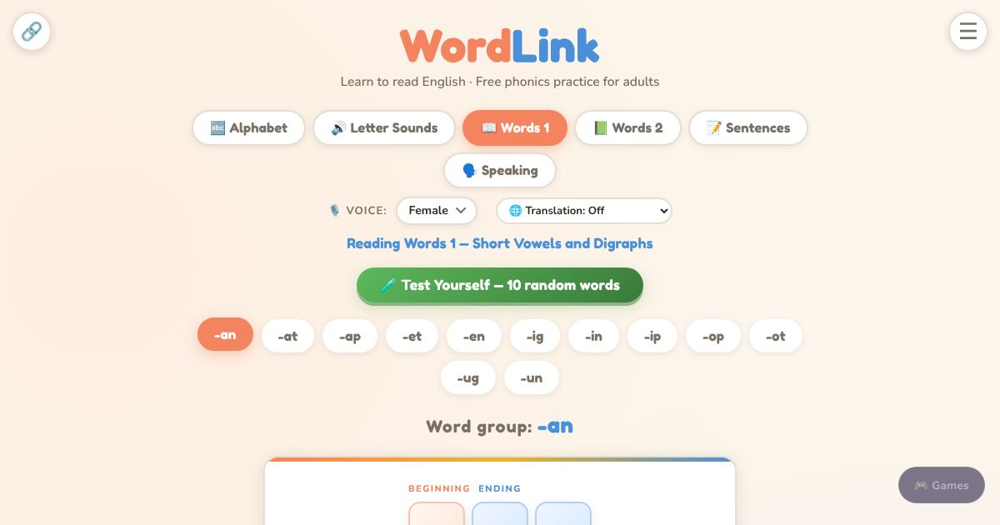

For teachers and tutors
About Sound Words
Sound words are short English words that can be read by saying each letter sound in turn, like cat, pen and sit. WordLink teaches them in steps. First the learner hears the sound each letter makes. Then they read short words, one letter pattern at a time, and tap any word to hear it read aloud. Longer words and harder patterns follow once the first set feels easy. It is made for adult EAL learners who are new to reading in any language.

How to use it
- Start with Letter Sounds and hear each sound.
- Open Words 1 and tap a word to hear it.
- Say the sounds, then the whole word.
- Move on to Words 2 for longer words.
Use it in a class
Use it as the phonics part of a pre-literacy lesson. Project one word list, say the sounds together, then let students practise alone on their phones. The Sound Gap, Tap Word and Build Word games give extra practice with the same words.